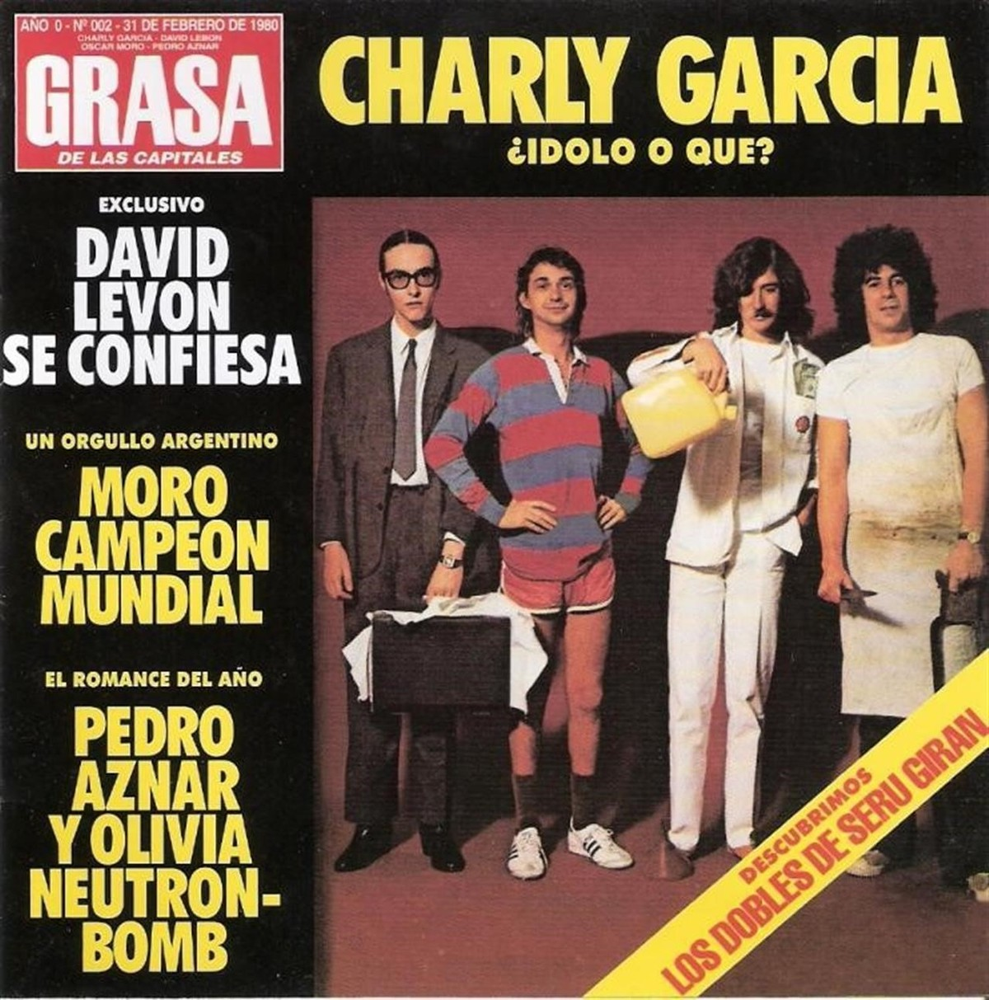
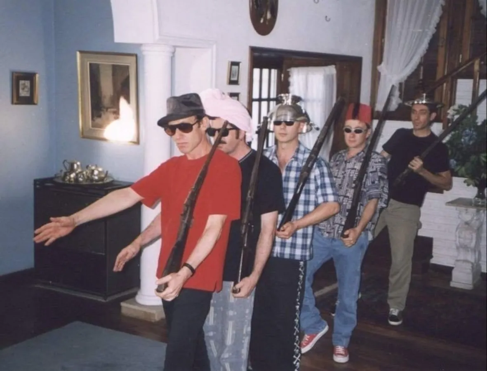
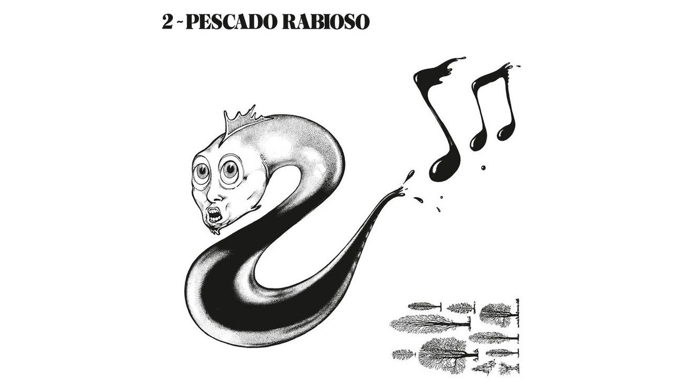
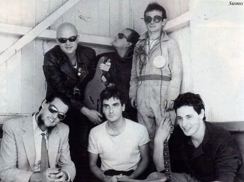

Seru Giran
Serú Girán fue un supergrupo argentino de rock progresivo, formado en 1978 por Charly García, Pedro Aznar, David Lebón y Oscar Moro. En sus apenas cinco años de actividad, se convirtió en uno de los actos musicales más importantes en la historia de la música latinoamericana y en la evolución del rock en español, sirviendo como influencia a múltiples artistas y bandas que surgirían en los años posteriores. Además, Serú Girán sería parte de notoria atención mediática por sus declaraciones socio-políticas en contra de la dictadura militar argentina que acechaba a la Argentina durante los fines de los 70 e inicios de los 80.

Soda Stereo
Soda Stereo fue una banda de rock argentina formada en 1982 originalmente por el cantante y guitarrista Gustavo Cerati, el bajista Zeta Bosio y el baterista Charly Alberti. Es considerada ampliamente por la crítica especializada como la banda más importante, popular e influyente del rock en español y una leyenda de la música latinoamericana. Fueron el primer grupo de habla hispana en conseguir un éxito masivo en Latinoamérica y tuvieron un papel muy importante en el desarrollo y la difusión del rock latinoamericano y el rock en español durante los años 80 y los 90.

Patricio Rey y sus Redonditos de Ricota
Patricio Rey y sus Redonditos de Ricota, también conocidos como Los Redondos, fue un grupo musical de rock argentino formado en La Plata en el año 1976 e integrado, en su mayor parte, por el Indio Solari (voz y composición), Skay Beilinson (guitarra y composición), Semilla Bucciarelli (bajo), Walter Sidotti (batería) y Sergio Dawi (saxofón, armónica y piano). Es considerado uno de los grupos más importantes e influyentes de la historia de la música de Argentina, así como también uno de los más convocantes en términos de audiencia.

Pescado Rabioso
Pescado Rabioso fue un grupo musical argentino de rock formado en 1971 e integrado, primordialmente, por Luis Alberto Spinetta, David Lebón, Black Amaya y Carlos Cutaia. Es considerado uno de los grupos fundacionales del rock argentino, por haber introducido hard rock, blues y rock psicodélico a la escena nacional. Inspirados por el grupo Pappo's Blues y el rock psicodélico que copaba por esa época la escena nacional, y con el que Spinetta se había familiarizado en su reciente viaje a Inglaterra y Países Bajos, Pescado Rabioso publicó su álbum de estudio debut Desatormentándonos en 1972

Sumo
Sumo fue una banda argentina de post-punk formada en el año 1981 por Luca Prodan (voz), Germán Daffunchio (guitarra), Ricardo Mollo (guitarra), Diego Arnedo (bajo), Alberto Troglio (batería) y Roberto Pettinato (saxofón). Originaria de la localidad de Nono, en las sierras de Córdoba, el grupo musical tendría varios cambios en su formación durante sus años iniciales, y luego sería trasladada a Hurlingham, donde publicarían su primer álbum de estudio, Divididos por la felicidad (1985), considerado el quinto mejor álbum de la historia del rock nacional argentino por la revista Rolling Stone. Sería seguido por los también exitosos álbumes Llegando los monos (1986) y After Chabón (1987)